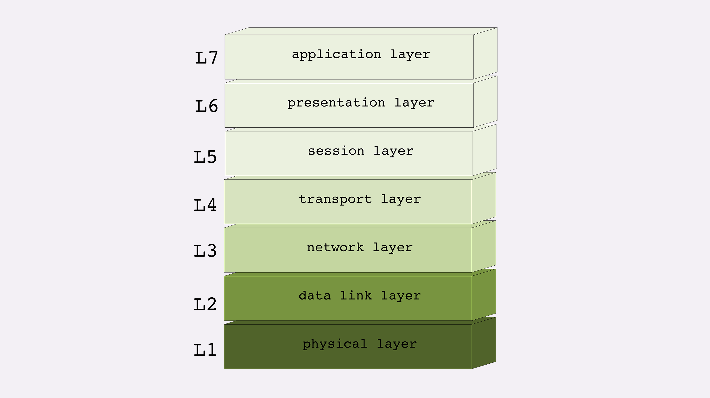

透视HTTP协议
Table of Contents
名词解释
- HTTP：HyperText Transfer Protocol 超文本传输协议
- CDN: Content Delivery Network 内容分发网络
- IP 协议: Internet Protocol
- TCP 协议：Transmission Control Protocol
- DNS: Domain Name System 域名系统，域名”（Domain Name）又称为“主机名”（Host）
- URI： Uniform Resource Identifier，统一资源标识符，唯一地标记互联网上资源
- URL：Uniform Resource Locator， 统一资源定位符，URI 的一个子集
- HTTPS：HTTP over SSL/TLS
- SSL： Secure Socket Layer，当发展到 3.0 时被标准化，改名为 TLS，即“Transport Layer Security”，但由于历史的原因还是有很多人称之为 SSL/TLS，或者直接简称为 SSL。
- OSI: Open System Interconnection Reference Model, 开放式系统互联通信参考模型
01| 时势与英雄：HTTP 的前世今生
- HTTP 协议始于三十年前蒂姆·伯纳斯 - 李的一篇论文
- HTTP/0.9 是个简单的文本协议，只能获取文本资源
- HTTP/1.0 确立了大部分现在使用的技术，但它不是正式标准
- HTTP/1.1 是目前互联网上使用最广泛的协议，功能也非常完善
- HTTP/2 基于 Google 的 SPDY 协议，注重性能改善，但还未普及
- HTTP/3 基于 Google 的 QUIC 协议，是将来的发展方向。
02| HTTP 是什么？HTTP 又不是什么？
HTTP 是什么？
超文本传输协议 ，它可以拆成三个部分，分别是： 超文本 、 传输 和 协议 。

- 协议：HTTP 是一个用在计算机世界里的协议。它使用计算机能够理解的语言确立了一种计算机之间交流通信的规范，以及相关的各种控制和错误处理方式。
- 传输：HTTP 是一个在计算机世界里专门用来在两点之间传输数据的约定和规范。
- 超文本：HTTP 是一个在计算机世界里专门在两点之间传输文字、图片、音频、视频等超文本数据的约定和规范。
我们可以把 HTTP 定义为“与 HTTP 协议相关的所有应用层技术的总和”。
03 | HTTP世界全览（上）：与HTTP相关的各种概念
- 互联网上绝大部分资源都使用 HTTP 协议传输
- 浏览器是 HTTP 协议里的请求方，即 User Agent
- 服务器是 HTTP 协议里的应答方，常用的有 Apache 和 Nginx
- CDN 位于浏览器和服务器之间，主要起到缓存加速的作用
- 爬虫是另一类 User Agent，是自动访问网络资源的程序
04 | HTTP世界全览（下）：与HTTP相关的各种协议
- TCP/IP 是网络世界最常用的协议，HTTP 通常运行在 TCP/IP 提供的可靠传输基础上
- DNS 域名是 IP 地址的等价替代，需要用域名解析实现到 IP 地址的映射
- URI 是用来标记互联网上资源的一个名字，由“协议名 + 主机名 + 路径”构成，俗称 URL
- HTTPS 相当于“HTTP+SSL/TLS+TCP/IP”，为 HTTP 套了一个安全的外壳
- 代理是 HTTP 传输过程中的“中转站”，可以实现缓存加速、负载均衡等功能
05 | 常说的“四层”和“七层”到底是什么？“五层”“六层”哪去了？
四层模型

- linker layer: 链接层，负责在以太网、WiFi 这样的底层网络上发送原始数据包，工作在网卡这个层次，使用 MAC 地址来标记网络上的设备，所以有时候也叫 MAC 层。
- internet layer: 网际层或者网络互连层，IP 协议就处在这一层。因为 IP 协议定义了“IP 地址”的概念，所以就可以在“链接层”的基础上，用 IP 地址取代 MAC 地址，把许许多多的局域网、广域网连接成一个虚拟的巨大网络，在这个网络里找设备时只要把 IP 地址再“翻译”成 MAC 地址就可以了。
- transport layer: 传输层，这个层次协议的职责是保证数据在 IP 地址标记的两点之间“可靠”地传输，是 TCP 协议工作的层次，另外还有它的一个“小伙伴”UDP。
- application layer：应用层，有各种面向具体应用的协议。例如 Telnet、SSH、FTP、SMTP 等等，当然还有 HTTP。 DNS, CDN 都工作在应用层
七层模型
OSI，全称是“开放式系统互联通信参考模型”（Open System Interconnection Reference Model）

- 第一层：物理层，网络的物理形式，例如电缆、光纤、网卡、集线器等等
- 第二层：数据链路层，它基本相当于 TCP/IP 的链接层
- 第三层：网络层，相当于 TCP/IP 里的网际层
- 第四层：传输层，相当于 TCP/IP 里的传输层
- 第五层：会话层，维护网络中的连接状态，即保持会话和同步
- 第六层：表示层，把数据转换为合适、可理解的语法和语义
- 第七层：应用层，面向具体的应用传输数据
二层转发，三层路由
二层转发就意味着是在数据链路层（Data Link Layer）做的转发，基于 MAC 地址，通常指的是交换机；三层路由意味着是在网络层（Network Layer）做的转发，通常指的是路由器（当然也有路由功能的交换机）；当数据传输到网络层，路由器会检查目的 IP 是否与自己处于同一网段，是则进行二层转发即请求目的主机的 MAC 地址，否则进行三层转发即进入路由的递归查找。
06 | 域名里有哪些门道？
域名结构 ：主机.二级域名.顶级域名
域名解析

Dns 的核心系统是一个三层的树状、分布式服务，基本对应域名的结构：
- 根域名服务器（Root DNS Server）：管理顶级域名服务器，返回“com”“net”“cn”等顶级域名服务器的 IP 地址
- 顶级域名服务器（Top-level DNS Server）：管理各自域名下的权威域名服务器，比如 com 顶级域名服务器可以返回 apple.com 域名服务器的 IP 地
- 权威域名服务器（Authoritative DNS Server）：管理自己域名下主机的 IP 地址，比如 apple.com 权威域名服务器可以返回 www.apple.com 的 IP 地址
全世界共有 13 组根域名服务器，虽然又有数百台镜像，但为了减轻域名解析的压力，采用的基本思路是 缓存 。
- 浏览器缓存
- 操作系统缓存
- host 文件
- 网络运营商自建 DNS 服务器，“野生”服务器被称为“非权威域名服务器”，比较知名的 DNS 有 Google 的“8.8.8.8”，Microsoft 的“4.2.2.1”
那么浏览器里输入 www.apple.com，具体的 DNS 解析过程是怎样的呢？

浏览器缓存->操作系统dnscache->hosts文件->非权威域名服务器->根域名服务器->顶级域名服务器->二级域名服务器->权威域名服务器
- 其中非权威域名服务器还包括LDNS（企业内网DNS服务器），三大营运商DNS，谷歌公开的DNS，微软公开的DNS等
- 操作系统 dnscache clinet 服务进行DNS缓存的（任务管理器里面可以看到一个dns客户端进程)
域名新玩法
- 重定向：当主机有情况需要下线、迁移时，可以更改 DNS 记录，让域名指向其他的机器
- 名字服务器：搭建一个在内部使用的 DNS，作为名字服务器
- 负载均衡
- 因为域名解析可以返回多个 IP 地址，所以一个域名可以对应多台主机，客户端收到多个 IP 地址后，就可以自己使用轮询算法依次向服务器发起请求，实现负载均衡
- 域名解析可以配置内部的策略，返回离客户端最近的主机，或者返回当前服务质量最好的主机，这样在 DNS 端把请求分发到不同的服务器，实现负载均衡
- 恶意玩法：域名屏蔽、域名劫持